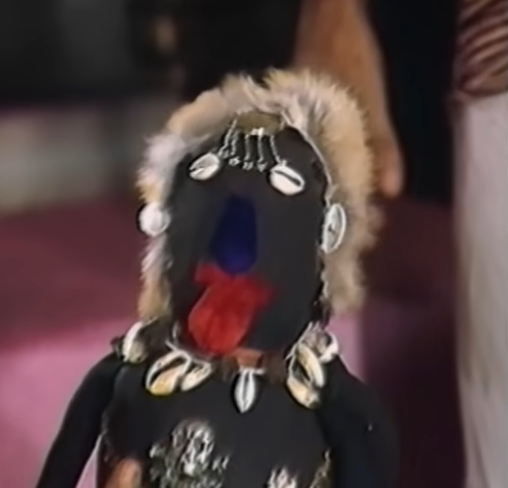
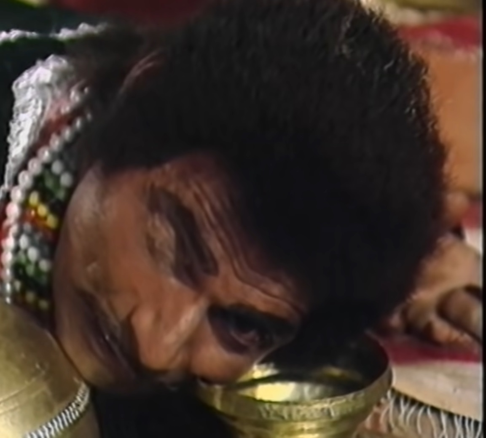
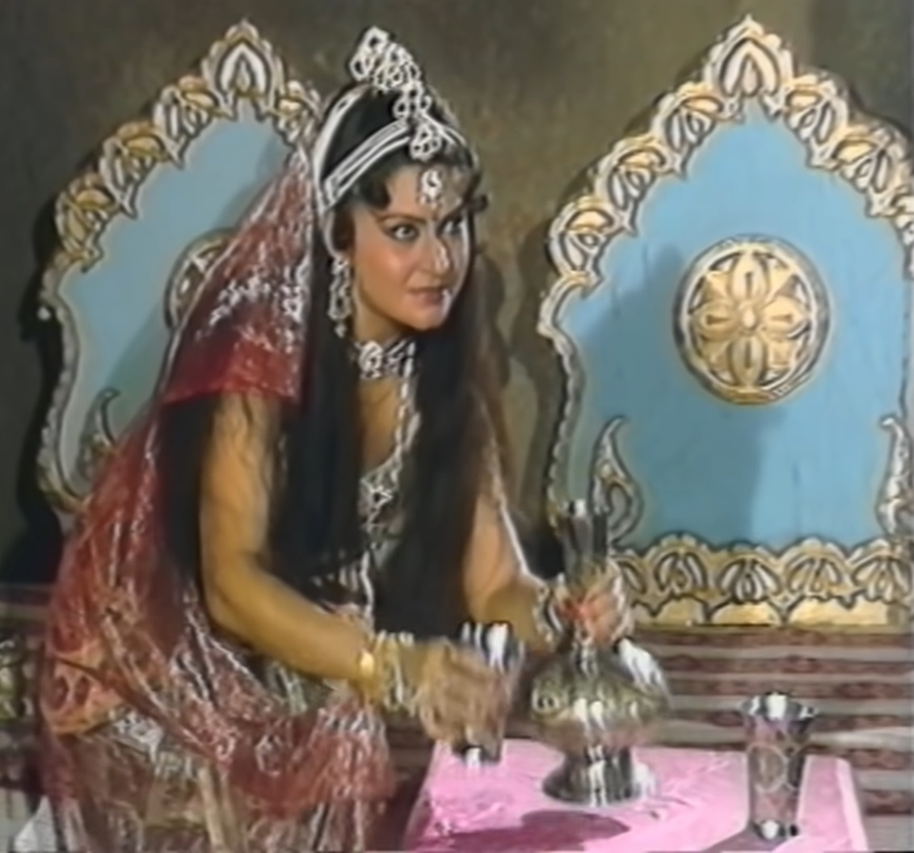

|  |
Vikram takes hold of Betal again and Betal again takes him away. tells the story. Abhijeet, a magician from Gorakhpur, meets a rich Yashwant Dubey. Comes to meet him and wants to get his daughter Nandani by luring him with gold. Was. The magician turned all the old utensils of the merchant into pots of gold. Gives a gem that can transform, due to greed, the businessman buys his daughter. He promises to give it to Nandani and then a woodcutter Sukesh comes there. The one who was Nandani's lover tells the businessman that Nandani loves me. Does it and he cannot hand it over to anyone else. magician his magical He imprisons Nandini in the mirror with Gudiya. sukesh magician's snatches the doll from him and kills the magician by strangulating the doll. gives. Sukesh goes away with the magician's book and sets Nandani free. Finds the solution to do it in that book. Sukesh according to that book a When he goes to the cave, he finds a woman there who gives him soma juice to drink. and tries to trap her in his love but Sukesh resists her. Does not get trapped in the net. That woman should be happy seeing Sukesh's love. She goes and gives him Kailash flower. Sukesh would have brought that flower back And frees Nandani from the mirror world. Sukesh and Nandani When they leave from there and prepare for the wedding, Sukesh meets his mother. He goes to the metropolis to get permission for the marriage. |
 |
| A sage appears to the king of that kingdom and tells him that the king You sacrificed your four sons and even your own body parts for your country. We have lost our lives in the war to protect this kingdom because of your loyalty. Are happy. The sage tells the king that today his destiny is going to change. He will get a beautiful daughter if she gets married to the king. Once a son is born, he can get all his kingdom back. Raja Mandir When he goes, he finds Nandani there. The king asks her about her address and Talks about coming to meet. Nandani tells him the address of her house. And goes away. On the way he meets Nagar Seth and he also wants to meet him. When he talks about it, she also tells him the address of the house. Nagar Seth also from Nandani Talks about coming to meet. On the way he is stopped by the minister and When he talked about meeting, Nandani asked him to come the day after tomorrow and went away. Is. This is how he meets the Prime Minister and he also talks about meeting him. So Nandani calls him also the day after tomorrow evening. All three men Nagar Seth, The Minister and the Prime Minister used their means to remove Sukesh from their path. Let's put the men behind him. |  | A magician sent by one of them puts him in chains with the help of mantra knowledge. Binds. The king comes on time and after some time he arrives When the city Seth comes, Nandani hides the king. Nagar Seth comes in And he talks about making Nandani his own, then there is a knock at the door and The minister also comes there. Nandani also hides Nagar Seth. Minister Coming inside he tells Nandani that he wants to marry her and then the doors close. But the Prime Minister comes and Nandani hides the Minister also and After coming inside, the Prime Minister also talks about building a relationship with Nandani. There is a knock on the door again and finally Sukesh arrives. king all this Was watching secretly. Sukesh comes and tells Nandani that someone has chained him. A Sadhu Baba freed him from bondage. Nandani after hearing this She tells Sukesh that she too has to face a great calamity. Nandani first comes out to Nagar Seth and says that he wants to marry her. If he wants then Sukesh tells him why did you complain about this to the minister? Didn't do it. |